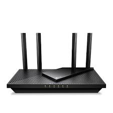
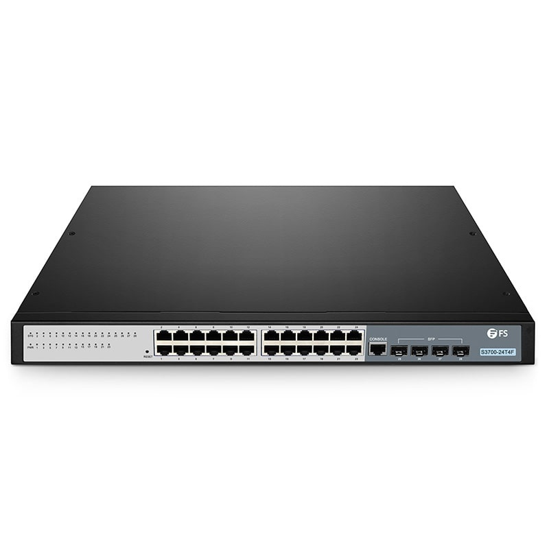

Le BTS SIO SLAM est un diplôme dans le domaine informatique. Ce brevet de technicien supérieur se prépare en deux ans après le bac. La formation a pour thème principal se penche sur les services informatiques aux organisations et, plus précisément, sur l'option SLAM (solutions logicielles et applications métiers). C’est l’une des deux options possibles en BTS SIO avec SISR, solutions d’infrastructure, systèmes et réseaux.
BTS SIO SISR. Deuxième option du BTS SIO , Découvrez l'option SISR (Solutions d'infrastructures, systèmes et réseaux) du BTS SIO (Services informatiques aux organisations), axée sur la gestion et la maintenance des systèmes informatiques.
| routeur | Un routeur est un équipement réseau informatique assurant le routage des paquets. Son rôle est de faire transiter des paquets d'une interface réseau vers une autre, au mieux, selon un ensemble de règles. Par exemple une box internet associe un routeur (wifi ou filaire) à une passerelle. |  |
| switch | Un switch désigne un commutateur réseau, équipement ou appareil qui permet l'interconnexion d'appareils communicants, terminaux, ordinateurs, serveurs, périphériques reliés à un même réseau physique. Contrairement au concentrateur (ou hub), il fractionne le réseau en domaines de collision indépendants. |  |
| adresse ip | Une adresse IP est l'endroit où réside un ordinateur au sens virtuel, elle ne donne pas des coordonnées GPS. L'adresse IP peut identifier votre propre ordinateur, un site Web préféré, un serveur réseau ou même un appareil (comme une webcam). |